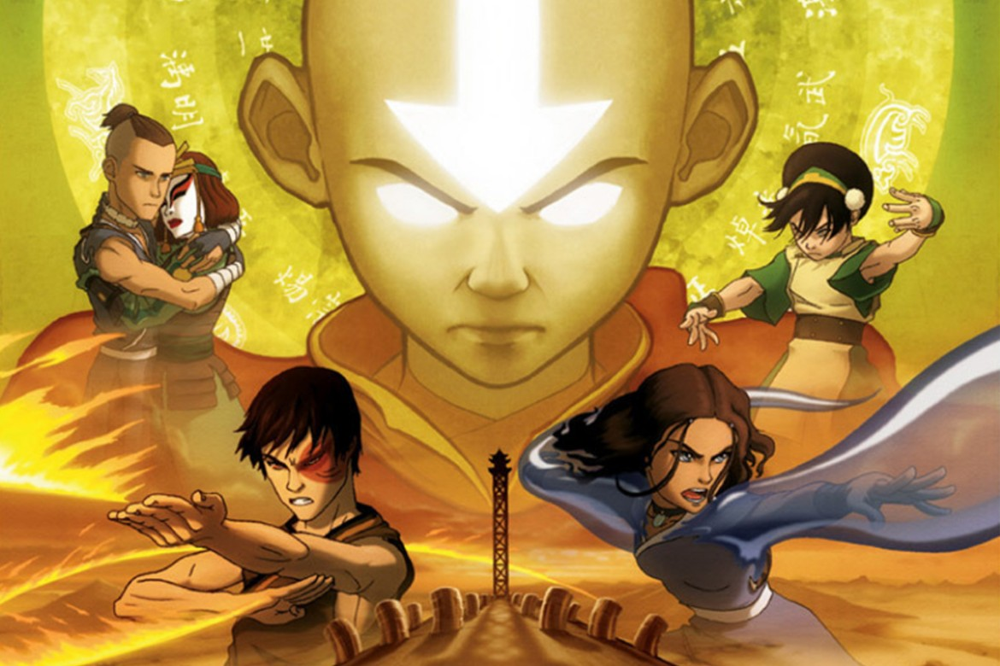

Topo do site
Avatar: The Last Airbender

Livro Dois: Terra.
Após os eventos emocionantes no Polo Norte, Aang, Katara e Sokka encontram refúgio em um posto
avançado do Reino da Terra. Determinados a pedir ao Rei Bumi para treinar Aang na dobra de terra, o
grupo é surpreendido pelo General Fong, que tenta persuadir Aang a usar seu estado Avatar para
derrotar imediatamente a Nação do Fogo.
No auge do confronto, Aang quase causa uma catástrofe ao quase destruir a base militar. Nesse
momento crítico, o Avatar Roku, no mundo espiritual, alerta Aang que a morte de seu corpo enquanto
no estado Avatar interromperia o ciclo de reencarnação do Avatar. Após se recuperarem, eles
continuam sua jornada em busca de um mestre de dobra de terra.
Enquanto isso, Zuko continua sua implacável perseguição a Aang, mas quase é capturado por sua irmã,
Azula. Porém, ele consegue escapar com a ajuda de seu tio Iroh. Durante um torneio de dominação de
terra, o Time Avatar conhece Toph, uma habilidosa dobradora de terra cega, que se junta a eles. No
entanto, a família de Toph espera que ela seja uma filha obediente, o que dificulta sua decisão de
se tornar a professora de Aang.
Enquanto a equipe se esforça para treinar e aprimorar suas habilidades, Zuko e Iroh enfrentam seus
próprios desafios e rejeições devido ao passado conturbado. Quando Azula os encontra, Zuko se une
temporariamente ao grupo de Aang para confrontá-la, resultando em ferimentos para Iroh.
Aang começa a aprender a dobra de terra com Toph, mas enfrenta dificuldades, já que é um elemento
oposto ao ar. Enquanto isso, Sokka faz uma descoberta crucial sobre um próximo eclipse que anulará o
poder dos dobradores de fogo, fornecendo uma chance de derrotar a Nação do Fogo.
O grupo enfrenta novos desafios em Ba Sing Se, quando Appa é sequestrado e a cidade ameaçada de
invasão. Após batalhas intensas com Azula, eles percebem uma perigosa conspiração política liderada
por Dai Li e Secretário Long Feng, que controlam até o próprio rei e estão por trás do
desaparecimento de Appa.
Aventuras emocionantes, separações temporárias e traições continuam a moldar a jornada do Time
Avatar. Aang busca orientação no Templo do Ar Oriental com o Guru Pathik, enquanto Sokka se reúne
com seu pai e Toph luta para escapar da vigilância de seus pais.
O destino os leva a caminhos diferentes, e o confronto final com Azula ameaça a vida de Aang. No
entanto, Katara consegue trazê-lo de volta à vida com a água do Oásis Espírito do Polo Norte. Com o
Reino da Terra sob domínio da Nação do Fogo, o Time Avatar enfrenta uma encruzilhada crucial em sua
jornada para restaurar o equilíbrio no mundo.